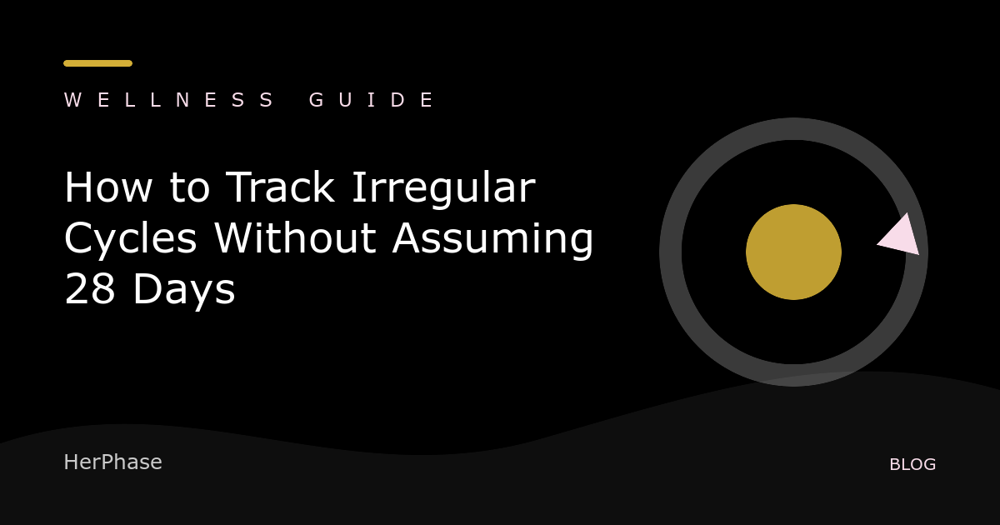

Cycle tracker for irregular periods
How to Track Irregular Cycles Without Assuming 28 Days
By HerPhase · Updated

A cycle is counted from the first day of bleeding in one period to the first day of bleeding in the next. Twenty-eight days is an average, not a rule. The useful information is your own sequence of dates and how it changes over time.
Record the first day consistently
Choose the first day of menstrual bleeding as day 1 and use the same rule each month. Record spotting separately so it does not silently change the start date later.
Keep the variation visible
Save each cycle length instead of replacing it with a single average. Also log how long bleeding lasts and any symptoms you want to discuss with a clinician. Do not use a phase estimate as contraception or proof of ovulation.
What counts as outside a typical adult range?
ACOG states that adult menstrual cycles are typically 21 to 35 days and a period generally lasts up to 7 days. ACOG also describes cycle-to-cycle variation of more than 7 to 9 days, bleeding between periods, very heavy bleeding, or no period for several months as reasons to discuss abnormal bleeding with a clinician.
Source: ACOG: Abnormal Uterine Bleeding.
HerPhase uses logged dates and a selected usual cycle length to provide general planning estimates. It does not diagnose irregular cycles or predict fertility.